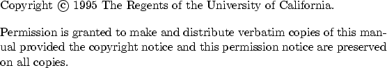

Next:
Contents
Contents
Index

Contents
1. Introduction
2. Code Organization
2.1 The Developer's Environment
2.2 Building Code
2.3 Checking out code
2.4 Checking in code
2.5 Installing a new version of ParFlow
3. Documentation
3.1 Writing Manuals
3.1.1 ParFlow Style Files
3.1.2 Providing Online Help for GUIs
3.2 Writing HTML Files
3.3 Writing PFIX Files
3.4 Writing AVS Module Help
3.5 (Not) Writing AVS/Express Module Help
4. ParFlow Modules
4.1 Using ParFlow Modules
4.2 Writing ParFlow Modules
4.3 ParFlow Module Example
4.4 Adding ParFlow Modules
5. ParFlow Input
6. Equations
6.1 Multi-Phase Flow Equations
6.2 Transport Equations
6.3 Notation and Units
7. Gridding
7.1 Terminology
7.2 Gridding Requirements
8. Discretization
9. Visualization
9.1 AVS
9.1.1 Writing AVS Modules
9.1.2 Writing AVS Coroutines
9.2 AVS/Express
9.2.1 Existing AVS/Express Modules
9.2.2 Writing AVS/Express Modules
9.2.2.1 Writing the Modules
9.2.2.2 Compiling AVS/Express Modules
9.2.2.3 Tips and Tricks
9.2.2.4 AVS/Express Bugs
9.3 Explorer
9.3.1 Writing Explorer Modules
10. Administrative
10.1 Mail Aliases
10.2 Permissions
10.3 Data Archiving
10.3.1 Archive Organization
10.3.2 Archive Status
10.3.3 Creating an Archive
10.3.4 Backing up an Archive
10.3.5 Removing an Archive
10.3.6 Restoring an Archive
10.3.7 Using an Archive
11. Reference Manual
11.1 Grid Reference
11.1.1 Grid Structures
11.1.2 Grid Accessors
11.1.3 ReadBackground
11.1.4 NewSubregion
11.1.5 NewSubregionArray
11.1.6 NewRegion
11.1.7 NewSubgrid
11.1.8 NewSubgridArray
11.1.9 NewGrid
11.1.10 FreeBackground
11.1.11 FreeSubregion
11.1.12 FreeSubregionArray
11.1.13 FreeRegion
11.1.14 FreeSubgrid
11.1.15 FreeSubgridArray
11.1.16 FreeGrid
11.1.17 ForSubregionI
11.1.18 ForSubregionArrayI
11.1.19 ForSubgridI
11.1.20 SubregionXYZ
11.1.21 SubgridXYZ
11.1.22 DuplicateSubregion
11.1.23 AppendSubregion
11.1.24 AppendSubregionArray
11.1.25 DuplicateSubgrid
11.1.26 AppendSubgrid
11.1.27 AppendSubgridArray
11.1.28 ConvertToSubregion
11.1.29 ConvertToSubgrid
11.1.30 ProjectSubgrid
11.1.31 ExtractSubgrid
11.1.32 IntersectSubgrids
11.1.33 SubtractSubgrids
11.1.34 UnionSubgridArray
Bibliography
Index
About this document ...
Next:
Contents
Contents
Index
Steve Smith 2008-06-02